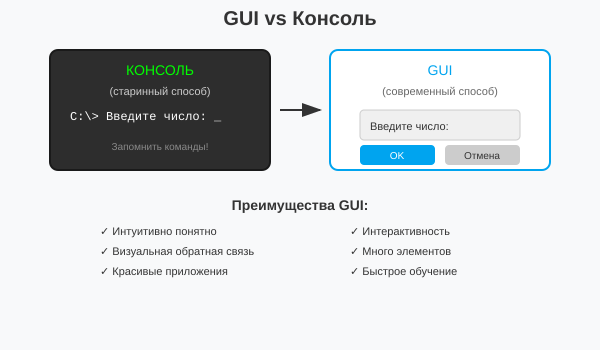
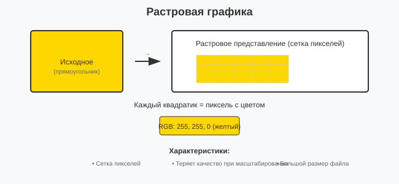
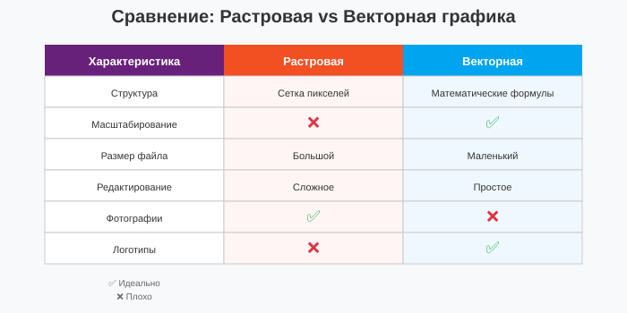
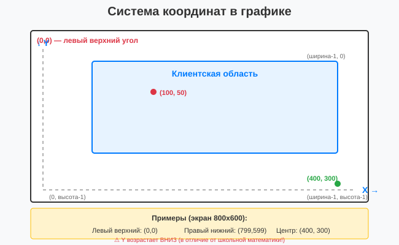
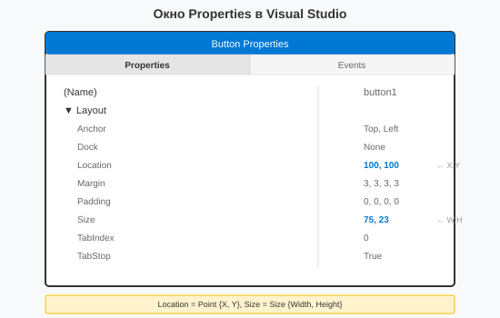
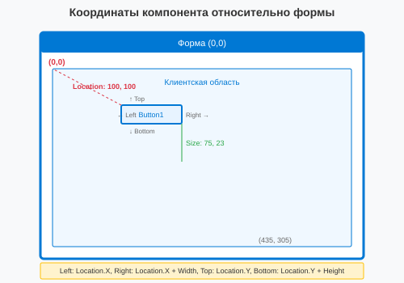
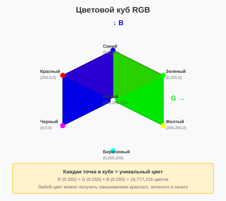

Урок 1.2: Основы графического программирования
📌 Ключевые моменты этого урока:
- GUI (графический интерфейс) — основной способ взаимодействия пользователя с приложением
- Растровая графика использует пиксели, векторная — математические формулы
- Система координат начинается с (0,0) в левом верхнем углу и растет вправо и вниз
- RGB модель описывает цвет как комбинацию красного, зеленого и синего компонентов
- ARGB добавляет компонент прозрачности (alfa channel) для специальных эффектов
Что такое GUI
GUI (Graphical User Interface) — графический пользовательский интерфейс. Это способ взаимодействия пользователя с программой через визуальные элементы: окна, кнопки, меню и т.д. Вместо набора текстовых команд в консоли, пользователь видит и нажимает на знакомые элементы.
GUI vs Консоль — в чем разница?

Сравнение консольного и графического интерфейса
Преимущества GUI для графического программирования:
- Интуитивно понятный интерфейс — пользователь сразу видит, что нужно делать без инструкций
- Визуальная обратная связь — цвета, анимации, движение показывают результат действия
- Возможность создания красивых приложений — своя палитра цветов, шрифты, изображения
- Одновременное отображение информации — на экране может быть много элементов сразу
- Интерактивность — приложение реагирует на клики, движения мыши, нажатия клавиш
Примеры GUI приложений
- Microsoft Word — текстовый редактор с меню, кнопками, форматированием
- Photoshop — графический редактор с палитрой, инструментами, слоями
- VLC Player — видеоплеер с кнопками управления и слайдером видео
- Visual Studio — среда разработки с множеством окон и инструментов
Растровая vs векторная графика
Это два принципиально разных подхода к хранению и отображению изображений. Понимание разницы критично для графического программирования.
Растровая графика:
Растровое изображение состоит из пикселей (маленьких квадратиков), каждый из которых имеет свой цвет. Как мозаика, составленная из цветных плиток.
- Структура — изображение состоит из пикселей в сетке (матрице)
- Каждый пиксель имеет свой цвет — RGB или RGBA значение
- При увеличении теряется качество — видны отдельные квадратики (пиксельность)
- Большой размер файла — для каждого пикселя нужно хранить информацию
- Идеально для фотографий — много деталей и оттенков
- Примеры форматов — PNG, JPG, BMP, GIF
ASCII диаграмма растровой графики:

Принцип работы растровой графики
Векторная графика:
Векторное изображение описывается математическими формулами — координатами и уравнениями линий, кривых, фигур. Как чертеж, нарисованный с помощью геометрии.
- Основаны на формулах — линии описываются уравнениями (y = mx + b)
- Масштабируется без потери качества — можно увеличить в любой раз, переформулировав математику
- Меньший размер файла — нужно хранить только формулы, не каждый пиксель
- Идеально для логотипов, иконок, графиков — четкие линии и простые формы
- Сложно для фотографий — нельзя описать миллионы оттенков формулами
- Примеры форматов — SVG, PDF, шрифты (TTF)
Сравнение таблица:

Сравнительная таблица растровой и векторной графики
Пиксели и система координат
Пиксель — это атомарная единица (минимальный неделимый элемент) на экране. Каждый пиксель имеет одноцветное значение. Система координат в компьютерной графике отличается от школьной математики!
Система координат в графике:

Система координат в Windows Forms
Работа с координатами в Visual Studio:
При работе с компонентами в дизайнере форм Visual Studio показывает координаты и размеры в окне Properties:

Окно свойств компонента в Visual Studio
Примеры:
- Location = (100, 50) → компонент находится на 100 пикселей слева и 50 пикселей сверху
- Size = (200, 100) → компонент имеет ширину 200 и высоту 100
Практический пример работы с координатами:
// Если форма имеет размер 800x600
// Получаем размеры формы
int formWidth = this.ClientSize.Width; // 800
int formHeight = this.ClientSize.Height; // 600
// Вычисляем центр формы
int centerX = formWidth / 2; // 400
int centerY = formHeight / 2; // 300
// Рисуем точку в левом верхнем углу
g.FillEllipse(Brushes.Red, 0, 0, 5, 5);
// Рисуем точку в центре
g.FillEllipse(Brushes.Green, centerX, centerY, 5, 5);
// Рисуем точку в правом нижнем углу
g.FillEllipse(Brushes.Blue, formWidth - 5, formHeight - 5, 5, 5);
// Горизонтальная линия в середине по Y
g.DrawLine(Pens.Gray, 0, centerY, formWidth, centerY);
// Вертикальная линия в середине по X
g.DrawLine(Pens.Gray, centerX, 0, centerX, formHeight);
// Рисуем прямоугольник по центру
int rectWidth = 200;
int rectHeight = 100;
int rectX = centerX - rectWidth / 2; // Центрирование по X
int rectY = centerY - rectHeight / 2; // Центрирование по Y
g.DrawRectangle(Pens.Black, rectX, rectY, rectWidth, rectHeight);Координаты компонента относительно формы:

Расположение компонента на форме
Вычисление координат:
- Левый верхний угол: (button.Location.X, button.Location.Y)
- Правый верхний угол: (button.Right, button.Location.Y)
- Левый нижний угол: (button.Location.X, button.Bottom)
- Правый нижний угол: (button.Right, button.Bottom)
Пример кода:
Button btn = new Button();
btn.Location = new Point(100, 100);
btn.Size = new Size(75, 23);
// Получаем координаты
int left = btn.Location.X; // 100
int top = btn.Location.Y; // 100
int right = btn.Right; // 175 (100 + 75)
int bottom = btn.Bottom; // 123 (100 + 23)Цветовые модели
Цвет на экране создается различными моделями смешивания света. В компьютерной графике главная модель — RGB.
RGB (Red, Green, Blue):
Монитор создает цвет смешиванием трех цветов света — красного, зеленого и синего. Каждый компонент имеет интенсивность от 0 до 255.
- 0 = свет выключен
- 255 = свет на максимальной яркости
- Смешивание — RGB(255,255,255) = белый (все свечают), RGB(0,0,0) = черный (ничего не светит)
RGB примеры:
// Основные цвета
Color red = Color.FromArgb(255, 0, 0); // Красный (R=255, G=0, B=0)
Color green = Color.FromArgb(0, 255, 0); // Зеленый
Color blue = Color.FromArgb(0, 0, 255); // Синий
// Вторичные цвета (смешивание двух основных)
Color yellow = Color.FromArgb(255, 255, 0); // Красный + Зеленый
Color cyan = Color.FromArgb(0, 255, 255); // Зеленый + Синий (бирюзовый)
Color magenta = Color.FromArgb(255, 0, 255); // Красный + Синий (малиновый)
// Ахроматические цвета
Color white = Color.FromArgb(255, 255, 255); // Все максимум
Color black = Color.FromArgb(0, 0, 0); // Все минимум
Color gray = Color.FromArgb(128, 128, 128); // Половина
Color darkGray = Color.FromArgb(64, 64, 64); // Четверть
Color lightGray = Color.FromArgb(192, 192, 192); // Три четверти
// Оттенки красного (меняя интенсивность)
Color brightRed = Color.FromArgb(255, 0, 0); // Яркий красный
Color darkRed = Color.FromArgb(128, 0, 0); // Темный красный
Color paleRed = Color.FromArgb(255, 128, 128); // Бледный красный (добавили G и B)Цветовой куб (визуализация RGB модели):

Визуализация цветовой модели RGB
ARGB — прозрачность (Alpha):
ARGB добавляет четвертый компонент — Alpha, который контролирует прозрачность. Это мощная техника для наложения изображений и создания эффектов.
- Alpha = 0 — полностью прозрачный (невидимый)
- Alpha = 255 — полностью непрозрачный (видимый)
- Alpha = 128 — полупрозрачный (50% видимый, 50% прозрачный)
// Примеры ARGB цветов с прозрачностью
// Полностью видимый красный
Color opaqueRed = Color.FromArgb(255, 255, 0, 0);
// A R G B
// Полупрозрачный красный (50% видимости)
Color semiTransparentRed = Color.FromArgb(128, 255, 0, 0);
// Почти невидимый синий (10% видимости)
Color almostInvisibleBlue = Color.FromArgb(25, 0, 0, 255);
// Полностью прозрачный черный (невидимый, не используется)
Color fullyTransparent = Color.FromArgb(0, 0, 0, 0);
// Применение в рисовании с прозрачностью
Brush semiTransparentBrush = new SolidBrush(semiTransparentRed);
g.FillEllipse(semiTransparentBrush, 50, 50, 100, 100);
// Эллипс будет полупрозрачным, сквозь него будут видны элементы позадиЧастые ошибки с ARGB:
// ❌ НЕПРАВИЛЬНО: забыли указать Alpha
// Color transparentRed = Color.FromArgb(255, 0, 0);
// This is RGB, not ARGB! (Alpha по умолчанию = 255)
// ✅ ПРАВИЛЬНО: используйте 4 параметра для ARGB
Color semiTransparentRed = Color.FromArgb(128, 255, 0, 0);
// ↑ обязательно Alpha
// ✅ Или используйте встроенный конструктор
Color simpleColor = Color.FromArgb(255, 128, 0); // RGB (3 параметра)
Color withAlpha = Color.FromArgb(128, Color.Red); // ARGB (Alpha, Color)Практическое применение цветов в графике:
- Выделение элемента — более яркий цвет для активного элемента
- Отключенные кнопки — серый цвет вместо яркого
- Полупрозрачные слои — рисовать поверх друг друга с видимостью через них
- Градиенты — плавный переход от одного цвета к другому
- Чередование цветов — для шахматных доск или визуализации данных
Практическое задание
Задание 1: Изучение системы координат
- Создайте новый проект Windows Forms
- Установите размер формы: 800x600 пикселей
- В дизайнере форм добавьте несколько компонентов:
- Button — установите Location = (100, 100), Size = (75, 23)
- Label — установите Location = (200, 150), Size = (100, 20)
- TextBox — установите Location = (50, 200), Size = (150, 20)
- Наблюдайте, как меняются координаты при перетаскивании компонентов
- Попробуйте изменить размер формы и посмотрите, как меняются координаты
Задание 2: Рисование координатной сетки
- Перейдите к коду формы (F7)
- Добавьте обработчик события Paint:
private void Form1_Paint(object sender, PaintEventArgs e) { Graphics g = e.Graphics; Pen gridPen = new Pen(Color.LightGray, 1); // Рисуем вертикальные линии for (int x = 0; x < this.ClientSize.Width; x += 50) { g.DrawLine(gridPen, x, 0, x, this.ClientSize.Height); } // Рисуем горизонтальные линии for (int y = 0; y < this.ClientSize.Height; y += 50) { g.DrawLine(gridPen, 0, y, this.ClientSize.Width, y); } // Отмечаем центр формы красным кругом int centerX = this.ClientSize.Width / 2; int centerY = this.ClientSize.Height / 2; g.FillEllipse(Brushes.Red, centerX - 5, centerY - 5, 10, 10); } - Перейдите в дизайнер форм и выберите форму
- В окне Properties перейдите на вкладку Events
- Дважды кликните по событию Paint
- Запустите приложение (F5) и проверьте результат
Задание 3: Работа с цветами
- Добавьте в обработчик Paint код для рисования цветов:
// Основные цвета RGB g.FillRectangle(Brushes.Red, 10, 10, 50, 50); g.FillRectangle(Brushes.Green, 70, 10, 50, 50); g.FillRectangle(Brushes.Blue, 130, 10, 50, 50); // Вторичные цвета Color yellow = Color.FromArgb(255, 255, 0); Color cyan = Color.FromArgb(0, 255, 255); Color magenta = Color.FromArgb(255, 0, 255); g.FillRectangle(new SolidBrush(yellow), 10, 70, 50, 50); g.FillRectangle(new SolidBrush(cyan), 70, 70, 50, 50); g.FillRectangle(new SolidBrush(magenta), 130, 70, 50, 50); // Цвета с прозрачностью (ARGB) Color semiTransparentRed = Color.FromArgb(128, 255, 0, 0); g.FillEllipse(new SolidBrush(semiTransparentRed), 200, 30, 80, 80); // Градиент LinearGradientBrush gradient = new LinearGradientBrush( new Point(10, 130), new Point(200, 130), Color.White, Color.Black); g.FillRectangle(gradient, 10, 130, 190, 50); - Запустите приложение и изучите полученные цвета
- Попробуйте создать свои цвета, меняя RGB значения
Задание 4: Центрирование компонентов
- В дизайнере форм добавьте кнопку
- В коде формы центрируйте кнопку:
public Form1() { InitializeComponent(); // Центрируем кнопку int buttonWidth = button1.Width; int buttonHeight = button1.Height; int centerX = this.ClientSize.Width / 2; int centerY = this.ClientSize.Height / 2; button1.Location = new Point( centerX - buttonWidth / 2, centerY - buttonHeight / 2 ); } - Запустите приложение и проверьте, что кнопка находится по центру
- Попробуйте изменить размер формы и посмотрите, что произойдет
Проверка знаний
Ответьте на вопросы, чтобы проверить, насколько хорошо вы усвоили материал: